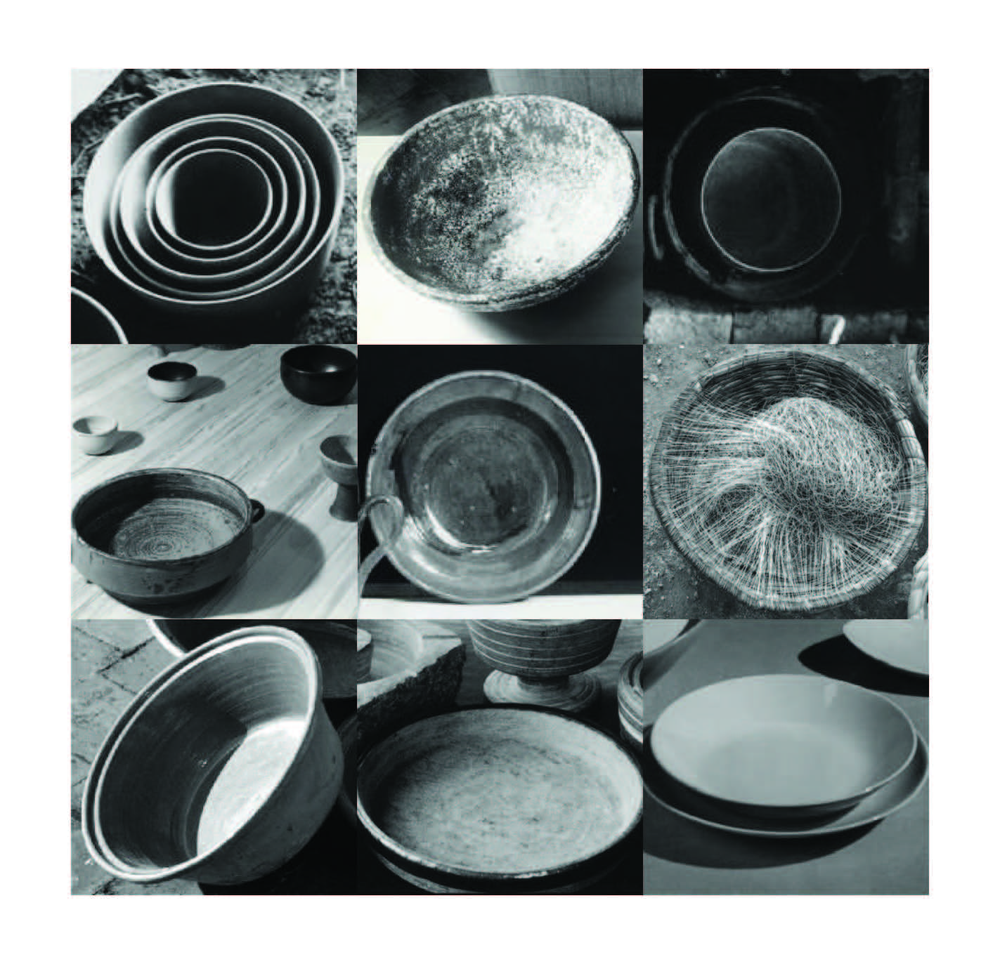
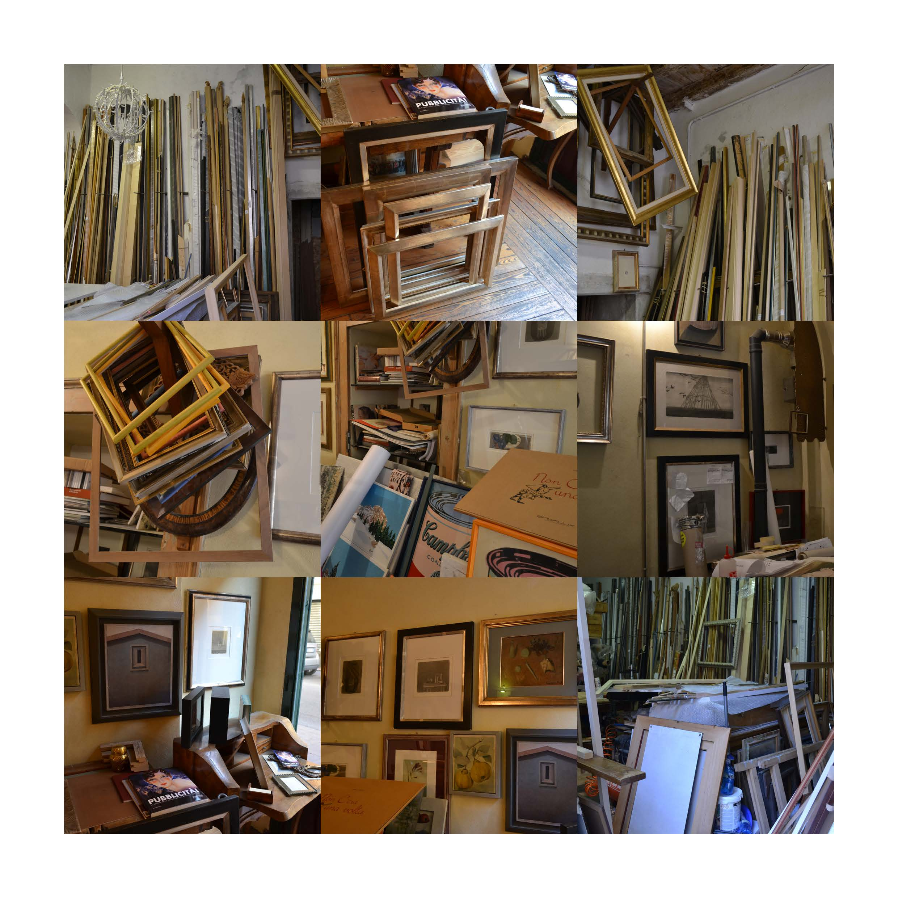
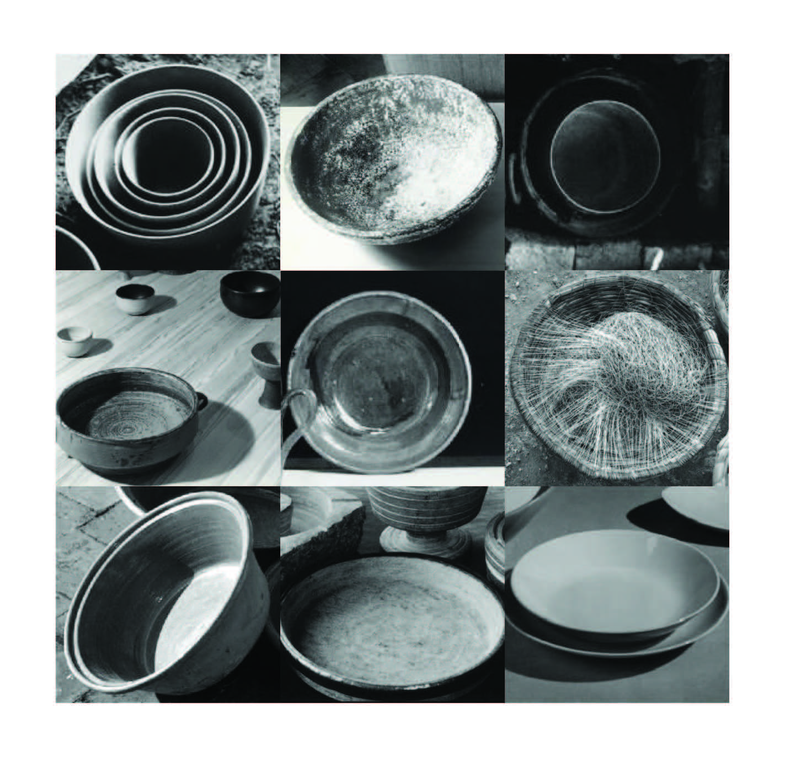
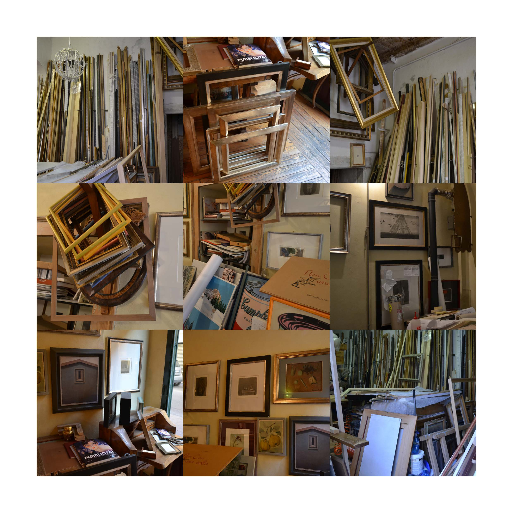

Questi disegni sono stati realizzati un "quadratino" per volta, giorno dopo giorno.
Elefante (Estate 2016)
Città (anno scolastico 2016-2017)
Elementi visivi
Alcuni progetti del laboratorio svolto nel primo semestre.
Il mio oggetto di studio era una cornice.
Disegni e loghi
Esempi di progetti realizzati per passione o per amici.
Albero con acquerelli, Albero con pastelli, Logo per un allenatore,
Logo personale BF(Beatrice Foresti), Stop-motion Fish
Foto
Foto personali scattate nei miei viaggi.
Murales a Riace (Italia), Meduse dell'Oceanografico di Valencia (Spagna),
Porticciolo di Lindau al tramonto (Germania), Concerto di Lorenzo Jovanotti a Milano
Eserczi Elementi di Inforormatica e Reti di Calcolatori

 


